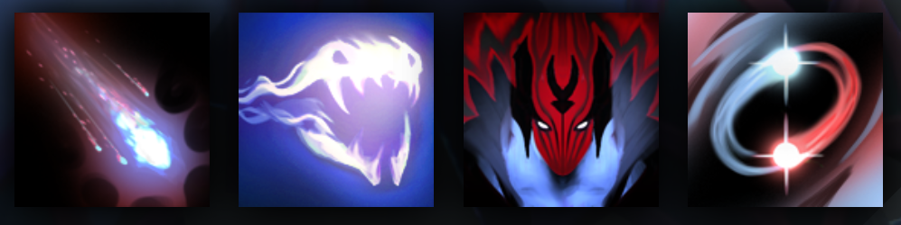

VENGEFUL SPIRIT
CAN SWAP HERSELF WITH ANY NEARBY HERO
HISTORY
Even the most contented Skywrath is an ill-tempered creature, naturally inclined to seek revenge for the slightest insult. But Vengeful Spirit is the essence of vengeance. Once a proud and savage Skywrath scion, Shendelzare was first in succession for the Ghastly Eyrie until a sister's treachery robbed her of her birthright. Snared in an assassin's net, Shendelzare tore free only at the cost of her wings, limping away in the ultimate humiliation: On foot. With her wings broken, she knew the Skywrath would never accept her as ruler; and in the highest roost of the Eyrie, inaccessible except by winged flight, her sister was untouchable. Unwilling to live as a flightless cripple, and desiring revenge far more than earthly power, the fallen princess drove a bargain with the goddess Scree'auk: She surrendered her broken body for an imperishable form of spirit energy, driven by vengeance, capable of doing great damage in the material plane. She may spend eternity flightless, but she will have her revenge.
ABILITIES
PAIRD WELL WITH
AXE
LINA
JAKIRO